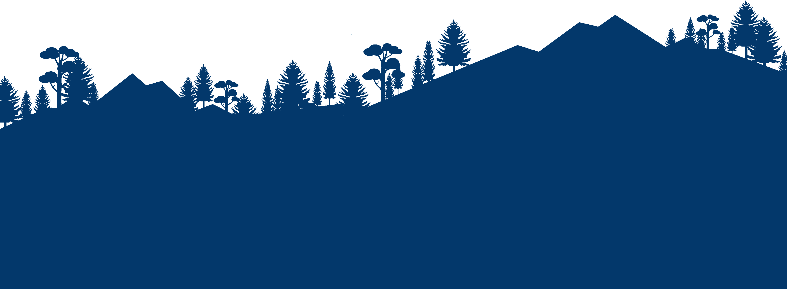

This is the 15th forest cover assessment in the series of biennial forest cover assessments initiated in the year 1987. These biennial assessments describe "how much and where our forest cover is, irrespective of its origin, species, ownership, land use or legal status". All tree stands with canopy density over 10% having an extent of more than 1 Ha (being the minimum Mapping Unit) including bamboos, orchards, coconut, palm etc within recorded forest, private, community or industrial lands are thus reflected in the assessment of forest cover. This helps forest managers and policy makers involved in scientific management to track the changes in forest cover.